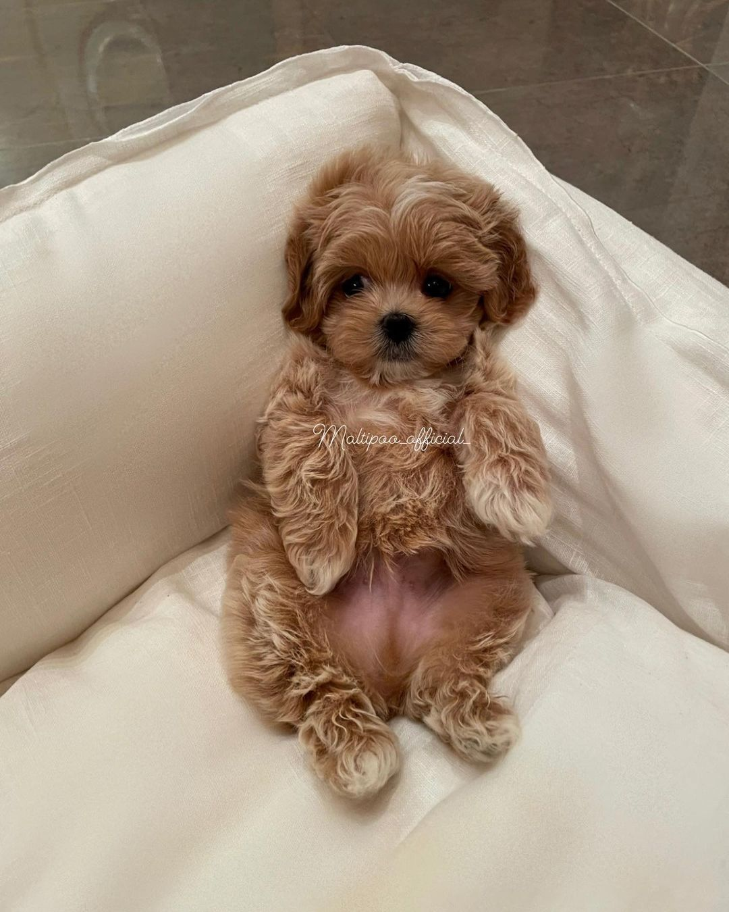

Характеристики
Вага мальтипу коливається від 2,5 кг до 9 кг. Висота у загривку — 15-35 см.
Колір
Мальтипу можуть мати різноманітний окрас — білий, сріблястий, кремовий, персиковий, коричневий та навіть
чорний.
Зустрічаються також мармурові та дво- або трикольорові окраси.
Шерсть
Шерсть може бути трьох видів:
- Шовковиста з прямими волосками, гладка. Щільність покриву може варіюватися від рідкого до дуже
густого.
Складного догляду не вимагає, достатньо регулярної стрижки.
- Кучерява з пружними кучерями. Потребує регулярного догляду, оскільки схильна до утворення ковтунів.
- Хвиляста з жорсткою структурою волосків.
Гібридизація
Розглядають такі покоління гібридизації мальтипу:
- Покоління F1 народжуються в результаті схрещування чистокровних мальтеза і пуделя. Внаслідок
гетерозису,
основний ефект переваги помісі, зокрема щодо здоров'я, тривалості життя, гіпоалергенної шерсті,
дружелюбності і т. д. спостерігається у цьому поколінні. Цуценята цього покоління також вважаються
набагато
симпатичнішими за наступні покоління.
- Покоління F2 народжуються в результаті схрещування двох мальтипу покоління F1. Подібні схрещування
можуть
призводити до непередбачуваних комбінацій характеристик мальтеза і пуделя. У багатьох собак F2
спостерігається традиційне сезонне линяння, їхня шерсть не гіпоалергенна.
- Покоління F3 народжуються в результаті схрещування двох мальтипу покоління F2. Представники цього та
наступних поколінь часто не мають переваг якостей своїх предків і не користуються популярністю для
розведення.
Покоління F1a і F1b виводяться шляхом схрещування мальтипу F1 і чистокровного мальтеза (а) або пуделя
(b). В
результаті отримується гібрид зі зсувом до мальтеза чи пуделя з властивими цій породі якостями.